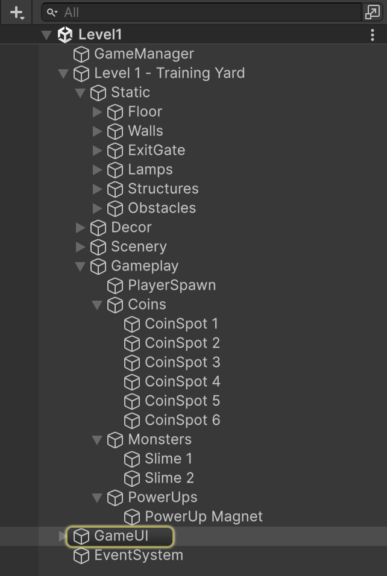
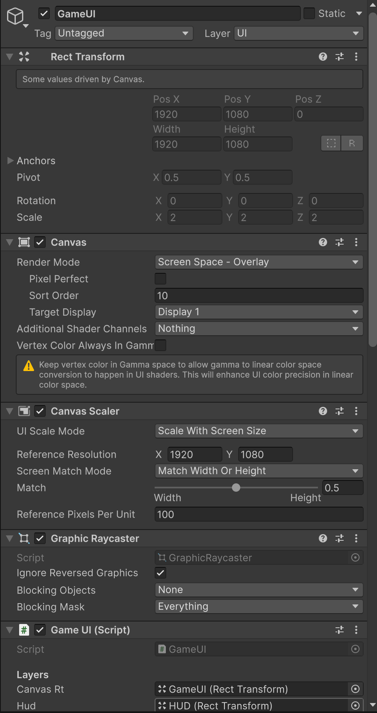
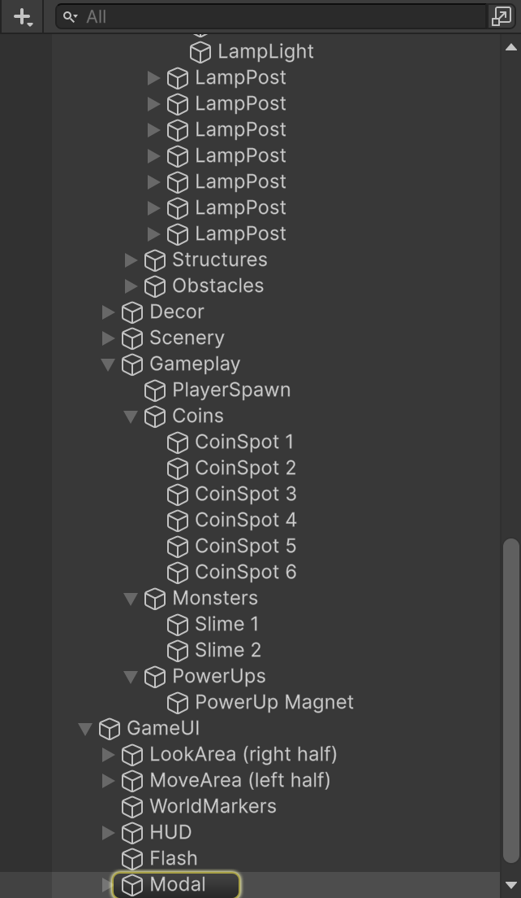
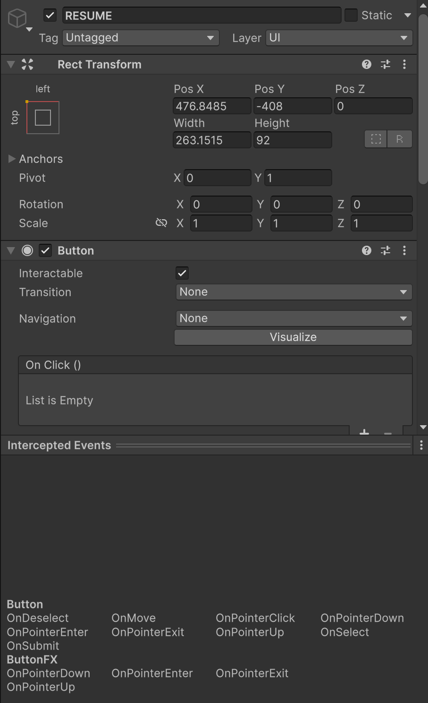
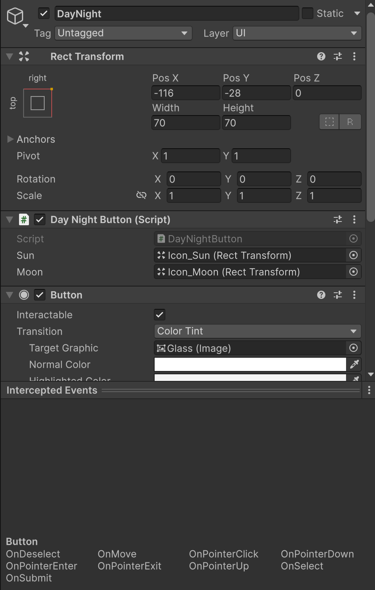
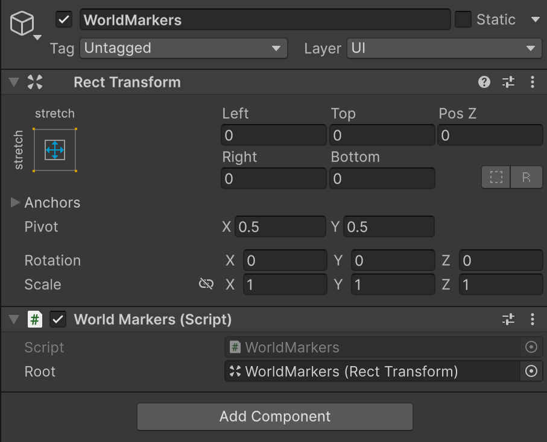

GOLD RUSH · Phase 9
Gameplay UI
Until now the game made its HUD in code. In this package the game UI is a real object in the scene: GameUI. It holds the HUD (gold, hearts, timer, day/night and pause buttons, power-up bars, arrow, messages), the level intro with the 3-2-1-GO countdown, and the PAUSED, LEVEL COMPLETE and CAUGHT dialogs. They are built from GameObjects, just like the menu, so you can see and change every part.
 HUD
HUD PAUSED
PAUSED LEVEL COMPLETE
LEVEL COMPLETE CAUGHT
CAUGHT1Import the package
- Make a new, empty Universal 3D project, set up as in Phase 0 (AI Navigation, Input System, Active Input Handling = Both). Or delete the folder
Assets/GoldRushin your project first. - Assets → Import Package → Custom Package… Pick
GoldRush_Phase09_GameUI.unitypackagefromGoldRush_Export/Packages/. - Keep everything ticked and click Import. Wait for the compile. The Console must show no red errors.
- File → Build Profiles → Scene List. Drag in
MainMenufirst, thenLevel1. - Open
Assets/GoldRush/Scenes/Level1.unity. In the Game view, pick the aspect Full HD (1920x1080).
2Check what is new
Check 1: GameUI in the Hierarchy
One new root object: GameUI (a Canvas). Next to it is the EventSystem (it was already there since Phase 3; it sends clicks and touches to the UI). Open GameUI. Its children are layers. Lower in the list = drawn on top:
| Child of GameUI | What it is |
|---|---|
LookArea (right half), MoveArea (left half) | Invisible touch areas for phones (phase 10). |
WorldMarkers | UI pieces that follow 3D objects: the "!" over a monster, the SPEED label, the EXIT label, the "+1". |
HUD | The corner chips: CoinPill, Hearts, Timer, DayNight, Pause, Power0–2, Stamina, Arrow, Toast, Hint. |
Flash | A red full-screen image, invisible until you get hit. |
Modal | The intro, the countdown and the three dialogs. Drawn over everything. |

Check 2: the GameUI component
Select GameUI. Check the Canvas (Screen Space - Overlay, Sort Order 10), the Canvas Scaler (Scale With Screen Size, 1920 × 1080, Match 0.5) and the Game UI script. Game UI has one field for every part it fills in: Coin Text, Hearts, Timer Text, Pause Dialog, Win Dialog, Lose Dialog… All fields are filled.

Check 3: the HUD
Look at the Game view (no Play yet). You see the HUD as it is saved: the gold counter and hearts at the top left, the timer, the sun/moon button and the pause button at the top right. Some parts (power-up bars, arrow, hint) are unticked: the game shows them when it needs them.
Check 4: the dialogs
Open GameUI › Modal. It has Countdown, Intro, Lose, Pause and Win. They are greyed out (unticked): GameUI turns them on when needed. Each dialog has the same shape: Dim (a dark layer that blocks clicks) and Panel › Glass with a Badge, Title, Subtitle, stat cards and buttons.

Check 5: a dialog button with Game Action
Select GameUI › Modal › Pause › Panel › Glass › RESUME. It has a Button, a Button FX (the press animation) and a Game Action with Action = resume. Every dialog button works like this:
| Dialog | Buttons (action) |
|---|---|
| Pause | MENU (menu), RETRY (retry), RESUME (resume) |
| Win | MENU (menu), RETRY (retry), NEXT (next) |
| Lose | MENU (menu), RETRY (retry) |

Check 6: the pause and day/night buttons in the HUD
Select GameUI › HUD › DayNight. It has a Day Night Button with a Sun and a Moon icon. The HUD › Pause button has no Game Action: GameUI connects it in code (in Bind()).

Check 7: World Markers
Select GameUI › WorldMarkers. Its World Markers component has Root = WorldMarkers itself. It is empty now: the labels over monsters, power-ups and the gate are added in Play mode.

3How it works
A dialog button must tell the GameManager what to do. GameAction works like MenuAction in the menu: you type the action name in the Inspector.
Assets/GoldRush/Scripts/UI/GameAction.cs and Gameplay/GameManager.cs (key lines)
// GameAction.cs
public string action = "resume";
void Awake()
{
GetComponent<Button>().onClick.AddListener(() =>
{
AudioFX.Play("click");
if (GameManager.I) GameManager.I.Run(action);
});
}
// GameManager.cs
UI = FindAnyObjectByType<GameUI>();
if (UI) UI.Bind(this); // the GameUI saved in the scene
else UI = GameUI.Create(this); // no GameUI: build one in code
public void Run(string action)
{
switch (action)
{
case "pause": Pause(); break;
case "resume": Resume(); break;
case "retry": Restart(); break;
case "menu": BackToMenu(); break;
case "next": NextLevel(); break;
}
}onClick.AddListener(...)connects the click in code, so the button needs nothing in On Click ().- When the level starts, the GameManager looks for a
GameUI. In phases 4–8 there was none, soGameUI.Create()built the same UI in code. Now it uses yours. Bind()hides the dialogs, the intro and the hint, connects the pause button and the MUSIC / SOUND toggles, and lets the HUD drop in from the top.- The GameManager then calls GameUI for everything you see:
SetCoins,SetLives,FlyCoin,Toast(a message at the top),Flash(red when hit),Intro,ShowPause,ShowWin,ShowLose. Pause()setsTime.timeScale = 0: the game stops.Resume(),Restart()andBackToMenu()set it back to 1.
Crit0–2, and GameUI makes each star gold or grey.4▶ Press Play
Start in MainMenu and click PLAY (or press Play in Level1).
- A dark band shows LEVEL 1 · TRAINING YARD, then 3 – 2 – 1 – GO! while the camera swoops behind the hero.
- The HUD drops in: 0 / 6 with a spinning coin, two hearts, the timer with ★ PAR 0:40, the sun and pause buttons. The controls hint shows at the bottom.
- Take a coin: it flies into the counter and a "+1" rises. A gold arrow at the screen edge points to the next coin.
- Monsters show a "!" when they see you. Take the MAGNET: a message flips in and a red bar counts down.
- Get hit: a red flash and a heart goes dark.
- Press Esc or click pause: the PAUSED dialog with your gold, time and lives. MUSIC and SOUND switch ON / OFF. RESUME, RETRY and MENU work.
- Take all gold and run through the gate: confetti and LEVEL COMPLETE with your stars. Get caught twice: CAUGHT with a tip.
5Try it
- Swap a button. Select
GameUI › Modal › Pause › Panel › Glass › RETRY. Set Game Action → Action =menu. Press Play, pause and click RETRY: you go back to the menu. Set it back toretry. - Change a text. Tick
Modal › Pauseso you can see it. SelectPause › Panel › Glass › Titleand change the textPAUSEDtoBREAK TIME. UntickPauseagain and press Play. (The subtitle is written by code: it always shows the level name.) - Change the hit flash. Open
GameManager.csand findUI.Flash(new Color(0.9f, 0.1f, 0.1f, 0.45f));. Change it tonew Color(0.1f, 0.4f, 1f, 0.45f). Get hit: the screen flashes blue.
6Common problems
| Problem | Fix |
|---|---|
| A dialog button does nothing. | It needs a Game Action with the action spelled exactly: menu, retry, resume, next. And the scene needs an EventSystem. |
| Everything appears twice in Play mode. | The Hud field of Game UI is empty, so it builds a second UI in code. Import the package again, or drag GameUI/HUD into Hud. |
NullReferenceException in ShowPause, ShowWin or ShowLose. | You deleted or renamed a part that a Game UI field points to. Import the package again. |
| A dialog is visible when the level starts. | Normal in edit mode if you ticked it: Bind() hides it at Play. |
| I click on the HUD, but the camera turns. | While you play, the mouse is locked. Press Esc first to free it. |
NEXT gives Scene 'Level2' couldn't be loaded. | Normal in this phase. Level 2 comes in phase 10. |
More fixes are on the Troubleshooting page.
Checkpoint package: GoldRush_Phase09_GameUI.unitypackage